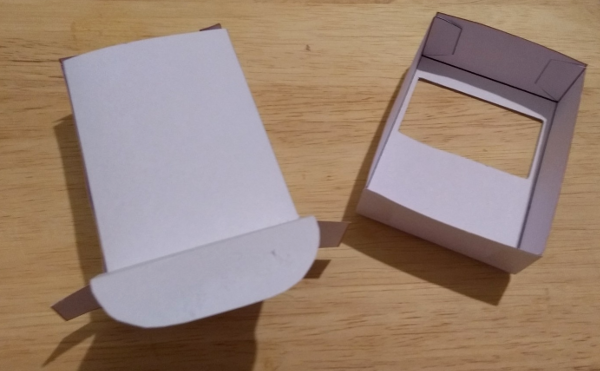
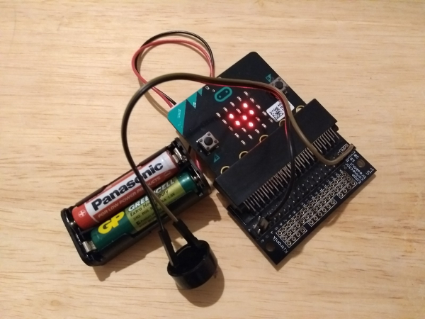
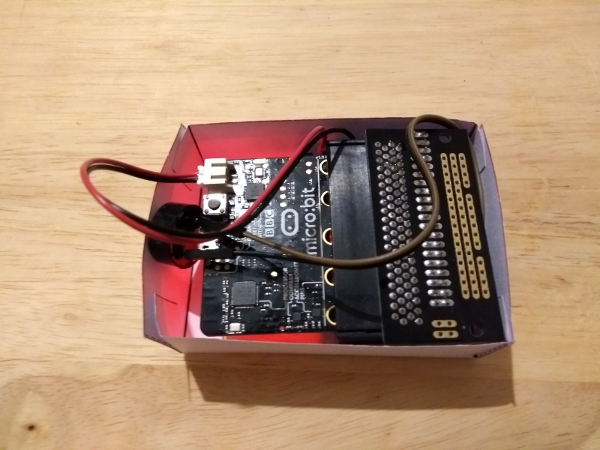
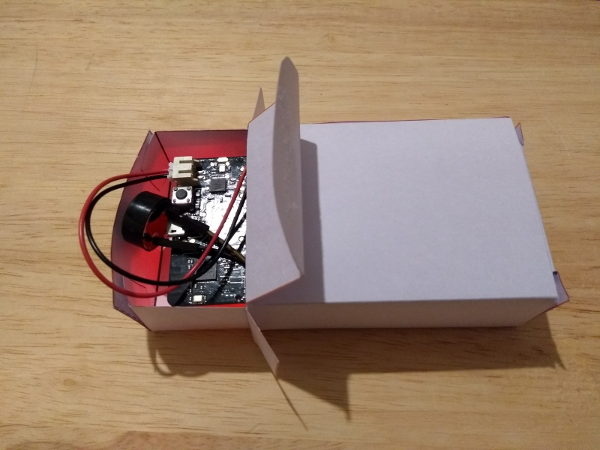
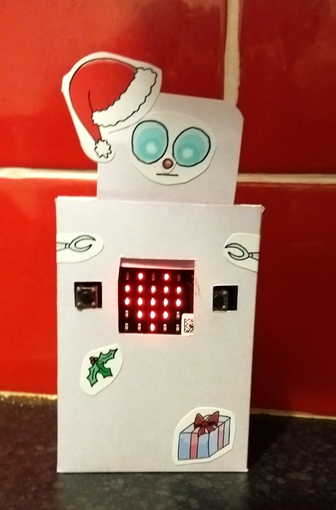
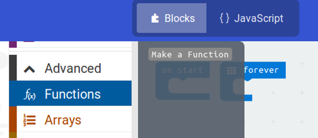
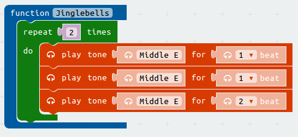

{kind=link}
{kind=link}
Connect the micro:bit to a breakout board.

For this project, you will need:
The first step is to make the santa robot body and build our circuit.
Make the two boxes that will become our santa bot.
Connect the micro:bit to a breakout board.
Add a wire to pin 0 and one to GND, connect a buzzer between these wires.
Connect the battery box to the microbit.
Put the Microbit into the smaller box, facing down as shown.
Slide the smaller box into the larger box and close the lid.
Glue the robot head in place and decorate your robot.
Now we can write the code. Our santa bot is going to play tunes when we shake him and show an animation on the LEDs.
To make out code easier to read we will need a new block function
This lets us make our own block we can use in different parts of our code
Start by opening the function block in the advanced section
Click 'Make a function' and call it Jinglebells
Drag a repeat block into our Jinglebells funtion and set it to repeat twice
Add three play tone blocks inside the repeat block
Set them all to Middle E
Play the first two for 1 beat and the last for 2 beats 
Add six more blocks and set them up like this.

Now we have a new block called JingleBells we can use anywhere in our code.
When we use it in our code it will play the first part of Jingle Bells.
Add an On shake block and then add our new function

Now add some show icon blocks to the forever loop to make an animation
Download this code onto your microbit and test it works.
Can you add code to your Jinglebells function to play the rest of the tune?
You can find a copy of the music on this site www.music-scores.com
These pictures will help you decode the music
Can you add a second funtion that plays a different tune?
There are other Christmas tunes here. https://www.musicnotes.com/christmas-sheet-music/
Use a random number and an If block to make your robot play either tune at random when your robot is shaken